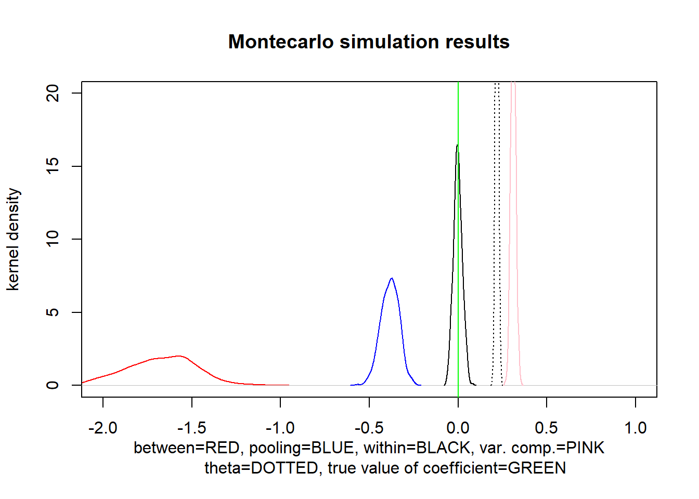
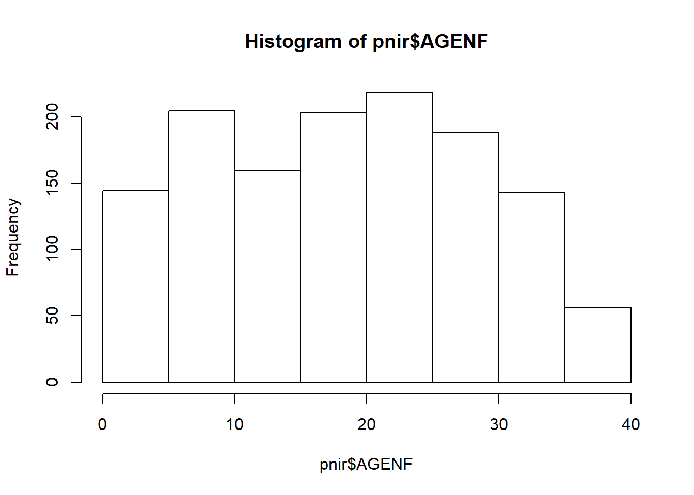
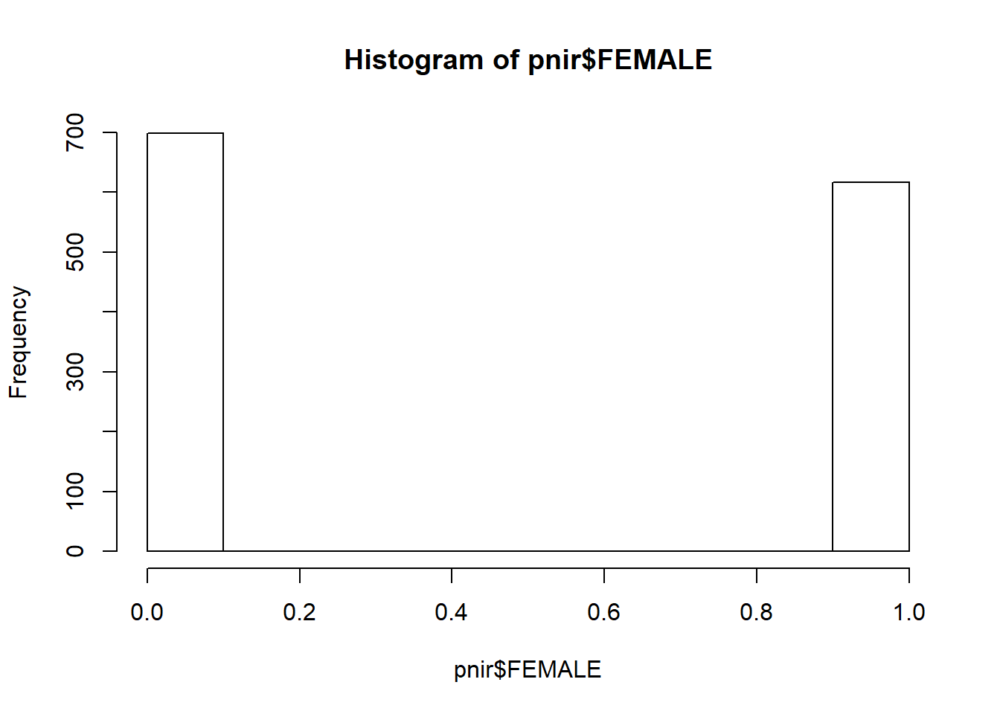

Chapter 5 Panel data structures
5.1 Reviewing the basics
5.1.1 Within, between and variance components
Hausman and Taylor (1981)
###############################################################################
# Illustration of bias and RMSE with pooling, within and variance components
###############################################################################
# Follows notation of the type used in: Hausman and Taylor (1981): "Panel Data
# and Unobservable Individual Effects," Econometrica 49(6):1377-1398.
###############################################################################
MC.panel.loop <- function(r=100,N=100,T=5,pi_alpha=0.0,pi_eta=0.0){
RNGkind(kind="Super-Duper")
beta <- 0 ; sigma_alpha <- 2 ; sigma_eta <- 1 ; sigma_X_tilde <- 1
a <- rep(rnorm(N*r,mean=0,sd=sigma_alpha),each=T)
ALPHA <- matrix(a,N*T,r)
e <- rnorm(N*T*r,mean=0,sd=sigma_eta)
ETA <- matrix(e,N*T,r)
x_tilde <- rnorm(N*T*r, mean=0, sd=sigma_X_tilde)
X_tilde <- matrix(x_tilde,N*T,r)
X <- ALPHA*pi_alpha + ETA*pi_eta + X_tilde
Y <- X*beta + ALPHA + ETA
# Definition of "annihilator" matrices as on top of p. 1380
I_N <- diag(x=1,nrow=N)
I_TN <- diag(x=1,nrow=N*T)
J <- matrix(1,T,1)
b <- (J%*%(1/T)%*%t(J))
PV <- I_N%x%b
QV <- I_TN - PV
# Within and between transformations
X_W <- QV%*%X
X_B <- PV%*%X
Y_W <- QV%*%Y
Y_B <- PV%*%Y
est.ols <- matrix(0,1,r)
est.within <- matrix(0,1,r)
est.between <- matrix(0,1,r)
est.varETA <- matrix(0,1,r)
est.varTOTAL <- matrix(0,1,r)
est.varALPHA <- matrix(0,1,r)
est.theta <- matrix(0,1,r)
est.varcomp <- matrix(0,1,r)
Y_G <- matrix(0,N*T,r)
X_G <- matrix(0,N*T,r)
for(i in 1:r){
est.ols[,i] <- solve(crossprod(X[,i]))%*%crossprod(X[,i],Y[,i])
# As in equation (2.3) on p. 1380
est.within[,i] <- solve(crossprod(X_W[,i]))%*%crossprod(X_W[,i],Y_W[,i])
# As in equation (2.4) on p. 1380
est.between[,i] <- solve(crossprod(X_B[,i]))%*%crossprod(X_B[,i],Y_B[,i])
est.varETA[,i] <- crossprod(Y_W[,i] - X_W[,i]*est.within[,i])/(N*(T-1))
est.varTOTAL[,i] <- crossprod(Y_B[,i] - X_B[,i]*est.within[,i])/(N*T)
est.varALPHA[,i] <- est.varTOTAL[,i] - (est.varETA[,i])/T
# Calculate variance components as in Proposition 2.1 on p. 1381
est.theta[,i] <- (est.varETA[,i]/(est.varETA[,i]+T*est.varALPHA[,i]))^0.5
Y_G[,i] <- Y[,i] - (1 - est.theta[,i])*Y_B[,i]
X_G[,i] <- Y[,i] - (1 - est.theta[,i])*X_B[,i]
# As in equation (2.5) on p. 1381
est.varcomp[,i] <- solve(crossprod(X_G[,i]))%*%crossprod(X_G[,i],Y_G[,i])
}
dens.ols <- density(est.ols)
dens.within <- density(est.within)
dens.between <- density(est.between)
dens.varETA <- density(est.varETA)
dens.varALPHA <- density(est.varALPHA)
dens.varcomp <- density(est.varcomp)
plot(dens.between, col="red", xlim=c(-2,1), ylim=c(0,20),
main="Montecarlo simulation results",
ylab="kernel density",xlab="between=RED, pooling=BLUE, within=BLACK, var. comp.=PINK
theta=DOTTED, true value of coefficient=GREEN")
lines(dens.ols, col="blue")
lines(dens.within, col="black")
lines(dens.varcomp, col="pink")
lines(density(est.theta), lty=3)
abline(v=beta,col="green")
stats <- rbind("Estimator =",
"Replications =",
"Individuals =",
"Time periods =",
"pi_alpha =",
"pi_eta =",
"varETA =",
"varALPHA =",
"theta =",
"bias =",
"se =",
"rmse =")
mean.varETA <- mean(est.varETA[1,])
mean.varALPHA <- mean(est.varALPHA[1,])
mean.theta <- mean(est.theta[1,])
bias.ols <- mean(est.ols[1,]) - beta
se.ols <- var(est.ols[1,])^0.5
rmse.ols <- mean(((est.ols[1,] - beta)^2 + var(est.ols[1,]))^0.5)
bias.within <- mean(est.within[1,]) - beta
se.within <- var(est.within[1,])^0.5
rmse.within <- mean(((est.within[1,] - beta)^2 + var(est.within[1,]))^0.5)
bias.varcomp <- mean(est.varcomp[1,]) - beta
se.varcomp <- var(est.varcomp[1,])^0.5
rmse.varcomp <- mean(((est.varcomp[1,] - beta)^2 + var(est.varcomp[1,]))^0.5)
s.ols <- rbind("Pooling",
r,
N,
T,
pi_alpha,
pi_eta,
round(mean.varETA,4),
round(mean.varALPHA,4),
round(mean.theta,4),
round(bias.ols,4),
round(se.ols,4),
round(rmse.ols,4))
s.within <- rbind("within",
r,
N,
T,
pi_alpha,
pi_eta,
round(mean.varETA,4),
round(mean.varALPHA,4),
round(mean.theta,4),
round(bias.within,4),
round(se.within,4),
round(rmse.within,4))
s.varcomp <- rbind("varcomp",
r,
N,
T,
pi_alpha,
pi_eta,
round(mean.varETA,4),
round(mean.varALPHA,4),
round(mean.theta,4),
round(bias.varcomp,4),
round(se.varcomp,4),
round(rmse.varcomp,4))
results <- cbind(stats,s.ols,s.within,s.varcomp)
print(results)
}
system.time(MC.panel.loop(500,400,5,-0.1,0.0))
## [,1] [,2] [,3] [,4]
## "Estimator =" "Pooling" "within" "varcomp"
## r "Replications =" "500" "500" "500"
## N "Individuals =" "400" "400" "400"
## T "Time periods =" "5" "5" "5"
## pi_alpha "pi_alpha =" "-0.1" "-0.1" "-0.1"
## pi_eta "pi_eta =" "0" "0" "0"
## "varETA =" "1.0021" "1.0021" "1.0021"
## "varALPHA =" "3.9665" "3.9665" "3.9665"
## "theta =" "0.2197" "0.2197" "0.2197"
## "bias =" "-0.3838" "-5e-04" "0.3116"
## "se =" "0.0512" "0.0245" "0.0142"
## "rmse =" "0.3872" "0.0331" "0.312"## user system elapsed
## 9.19 0.18 11.36Doing the within transformation by hand on real world data
USE EXAMPLE FROM THE PNIR PAPER
# Load the data and attach the variable names.
pnir <- read.table("pnir.txt",header=TRUE)
pnir$count <- ave(pnir$IDENF, pnir[,c("IDENF")], FUN=length)
pnir$t0 <- ifelse(pnir$PERIODE == 0, 1, 0)
pnir$t1 <- ifelse(pnir$PERIODE == 1, 1, 0)
pnir$t2 <- ifelse(pnir$PERIODE == 2, 1, 0)
pnir$t3 <- ifelse(pnir$PERIODE == 3, 1, 0)
pnir$t4 <- ifelse(pnir$PERIODE == 4, 1, 0)
table(pnir$count)##
## 1 2 3 4 5
## 313 304 363 200 135hist(pnir$AGENF)
hist(pnir$FEMALE)
pnir1 <- subset(pnir, pnir$count > 1)
pnir2 <- aggregate(pnir1, by = list(pnir1$IDENF), FUN=mean, na.rm = TRUE)
pnir3 <- merge(pnir1, pnir2, by = "IDENF",suffixes = c("", "_B"))
# Do the "within-child" transformation simply by taking the difference of two matrices
mpnir3 <- as.matrix(pnir3)
mpnir3P <- mpnir3[,1:32]
mpnir3B <- mpnir3[,33:64]
mpnir3W <- mpnir3P - mpnir3B
mpnir3W1 <- mpnir3W[,5:32]
# This constructs the within-child dataframe
pnir4 <- data.frame(cbind(pnir1$IDENF, pnir1$IDM, pnir1$CODEVILL, mpnir3W1))
haz.lm <- lm(HAZ ~ -1 + t1 + t2 + t3 + t4 + LPNIR
+ AGENF + LIRECM + LNAGECM
+ PROGALPH + ELECTVI + LOGPOP, data = pnir4)
summary(haz.lm)##
## Call:
## lm(formula = HAZ ~ -1 + t1 + t2 + t3 + t4 + LPNIR + AGENF + LIRECM +
## LNAGECM + PROGALPH + ELECTVI + LOGPOP, data = pnir4)
##
## Residuals:
## Min 1Q Median 3Q Max
## -3.4358 -0.5110 0.0042 0.4744 3.9185
##
## Coefficients:
## Estimate Std. Error t value Pr(>|t|)
## t1 -1.189619 0.770065 -1.545 0.12271
## t2 -1.144969 1.207662 -0.948 0.34332
## t3 -1.359885 1.857108 -0.732 0.46418
## t4 -0.978567 2.352187 -0.416 0.67748
## LPNIR 0.545349 0.269926 2.020 0.04361 *
## AGENF 0.008944 0.104053 0.086 0.93152
## LIRECM 0.416358 0.140569 2.962 0.00313 **
## LNAGECM 0.143795 0.668645 0.215 0.82977
## PROGALPH 0.189547 0.085706 2.212 0.02722 *
## ELECTVI 0.331788 0.208340 1.593 0.11158
## LOGPOP -0.214195 0.192483 -1.113 0.26607
## ---
## Signif. codes: 0 '***' 0.001 '**' 0.01 '*' 0.05 '.' 0.1 ' ' 1
##
## Residual standard error: 0.8682 on 991 degrees of freedom
## Multiple R-squared: 0.0879, Adjusted R-squared: 0.07778
## F-statistic: 8.682 on 11 and 991 DF, p-value: 8.14e-15library(multiwayvcov)
library(lmtest)
haz.vcovCL <- cluster.vcov(haz.lm, pnir1$CODEVILL)
haz.clustered.se <- coeftest(haz.lm, haz.vcovCL, df = 652)
haz.clustered.se##
## t test of coefficients:
##
## Estimate Std. Error t value Pr(>|t|)
## t1 -1.1896190 0.9209170 -1.2918 0.19689
## t2 -1.1449692 1.5189489 -0.7538 0.45125
## t3 -1.3598851 2.3179838 -0.5867 0.55763
## t4 -0.9785667 2.9878615 -0.3275 0.74338
## LPNIR 0.5453493 0.2625044 2.0775 0.03815 *
## AGENF 0.0089441 0.1357746 0.0659 0.94750
## LIRECM 0.4163577 0.1690447 2.4630 0.01404 *
## LNAGECM 0.1437950 0.4589656 0.3133 0.75415
## PROGALPH 0.1895465 0.1084455 1.7479 0.08096 .
## ELECTVI 0.3317884 0.2493300 1.3307 0.18375
## LOGPOP -0.2141948 0.2582648 -0.8294 0.40720
## ---
## Signif. codes: 0 '***' 0.001 '**' 0.01 '*' 0.05 '.' 0.1 ' ' 15.1.2 Multidimensional panels
USE EXAMPLE FROM THE BURUNDI PAPER USE EXAMPLE FROM A UNIDO DATA PAPER
USE THE xxxx PACKAGE
5.1.3 Mundlak
Mundlak (1978)
5.1.4 The incidental parameters problem
HAVE CODE ON DISCRETE CHOICE PANEL MODEL
Lancaster (2000)
INCLUDE MULTINOMIAL LOGIT STUFF FROM FIRST CHINA BEAUTY PAPER
5.2 Common situations
5.2.1 Panel data in an RCT
INSERT PROBLEM SET HERE ON LESOTHO DATA
You are going to see whether a $30m Millennium Challenge Corporation (MCC) water program in Lesotho actually did anything for the populations being treated. The impact evaluation was carried out by NORC at the University of Chicago: http://www.norc.org. Go to the project page at:
https://catalog.data.gov/dataset/lesotho-rural-water-supply-and-sanitation
Download all of the materials. In particular, make sure that you have the “Final Evaluation Report Package,” and “Public Use Data Package.” Make sure you can replicate the descriptive statistics of Tables 4, 5 and 6. Replicate, the first two columns in Tables 7, 8 and 9 in the report: i.e. only replicate the columns of results where the heading is “Original Design” or “Observed Design” —ignore the columns where the heading is “Instrumental Variable” or “Matching”. Do this as best as you can: you probably won’t be able to get everything perfect, even in terms of the number of observations or the summary statistics –but you will get close.
Notice that most of the results of Tables 7 and 8 (and one line in Table 9) include household fixed effects. You should carry out the “within” or first-difference transformation (they are identical here because there are 2 observations per household) before running the simple OLS regressions in R. Now carry out randomization inference on the results. Discuss.
Now notice again that most of the results that you just replicated and improved upon using randomization inference are based on regressions that included household fixed effects. But does using fixed effects make sense in the context of an RCT? Why yes or why not?
To guide you in terms of answering, note that last year I gave a problem that asked just this question (which means you already have an informational advantage!). In what follows, I reproduce that question from last year, and then ask you to apply your findings to the Lesotho study.
- Consider an RCT in which we have a baseline and an endline, which is the case here. Denoting the outcome by \(Y_{t}\), in which the baseline corresponds to \(t=1\) and post-intervention (endline) corresponds to \(t=2\), the simple difference between treated and control at \(t=2\) can be written as the OLS regression:% \[ Y_{2}=D_{2}\beta _{D}+U_{2}, \] whereas the DID estimator (which is what the authors of the NORC report did for most outcomes) is given by: \[ Y_{2}-Y_{1}=\left( D_{2}-D_{1}\right) \beta _{DID}+U_{2}-U_{1}, \] where of course \(D_{1}=0\) for everyone. In the absence of serial correlation in the disturbance terms, what should you do, include the fixed effects or not? Assume now that there is first-order serial correlation, that takes the form: \[ U_{2}=\rho U_{1}+e, \] where \(\rho \in \lbrack -1,1]\) and \(e\) is white noise. When should you difference and when should you not? (Hint: you are going to have to look at variances…)
When should you condition on \(Y_{1}\), which would mean running: \[ Y_{2}=Y_{1}\gamma +D_{2}\beta _{COND}+U_{2}? \]
You should answer this part of the question analytically.
Now spend a limited amount of time running a simple Montecarlo experiment. Define potential outcomes as: \[ \begin{eqnarray*} Y_{11} &=&U_{11}, \\ Y_{01} &=&U_{01}, \\ Y_{12} &=&\beta +U_{12}, \\ Y_{02} &=&U_{02}, \end{eqnarray*} \] where: \[ \left( U_{11},U_{01}\right) \sim N\left( \left( 0,0\right) ,\Sigma _{U}\right) =N\left( \left( 0,0\right) ,\left( \begin{array}{cc} \sigma _{U}^{2} & 0 \\ 0 & \sigma _{U}^{2}% \end{array}% \right) \right) , \] and \[ \begin{eqnarray*} U_{12} &=&\rho U_{11}+e_{11}, \\ U_{02} &=&\rho U_{01}+e_{01}, \end{eqnarray*} \] where: \[ \left( e_{11},e_{01}\right) \sim N\left( \left( 0,0\right) ,\Sigma _{e}\right) =N\left( \left( 0,0\right) ,\left( \begin{array}{cc} \sigma _{e}^{2} & 0 \\ 0 & \sigma _{e}^{2}% \end{array}% \right) \right) . \] Generate a random treatment indicator \(D\), and construct observed outcomes as: \[ \begin{eqnarray*} Y_{1} &=&Y_{11}D+Y_{01}(1-D), \\ Y_{2} &=&Y_{12}D+Y_{02}(1-D). \end{eqnarray*} \] Consider the three linear regressions: \[ \begin{eqnarray*} Y_{2} &=&\alpha +D\beta _{D_{2}} \\ Y_{2}-Y_{1} &=&\alpha +D\beta _{DID} \\ Y_{2} &=&\alpha +Y_{1}\gamma +D\beta _{COND}, \end{eqnarray*} \]
and examine the variances of the three estimators as you vary $$.
Now apply the intuition gleaned from both your analytical answer and these Montecarlo results to the Lesotho data, by comparing estimates of program impact based on each of the three estimators, with and without randomization inference. How do things change with respect to the replication exercise you carried out in Problem 1? What estimator do you come down in favor of? Why?
BASE THIS ON STUDENT ANSWERS FROM THE 2018 PROBLEM SET 1
5.2.2 Instrumental variables
Download the Senegalese panel dataset pnir.txt. There are three cross-sectional dimensions to the panel: child (\(i\), IDENF), household (\(h\), IDM), village (\(v\), CODEVILL). The time dimension is denoted by \(t\) (PERIODE).
Covariates in your specifications should include: - period dummies; - the age of the child AGENF; - whether the household head can read LIRECM; - the log of the household head’s age LNAGECM; - whether there is a literacy program in the village PROGALPH; whether the village is hooked up to the national electricity grid ELECTVI; - the log of the population of the village LOGPOP.
Suppose that you want to estimate the impact of projects constructed by the PNIR rural infrastructure program (PROJET) on a child’s weight-for-age z-score (WAZ). This is a standard anthropometric measures of child health. Treatment by a completed PNIR project obtains at the village level. Your exclusion restrictions for treatment by a PNIR project are given by three measures of village political power (which affect the probability that the village gets a project or not) given by: whether a villager is a member of the majority on the Conseil rural: MBMAJORI; whether a villager is a member of the biggest party on the Conseil rural: MBMAJOR1; the number of women from the village on the Conseil rural NBFEMME\_. Compute the impact of the PNIR using the within-child instrumental variables estimator, and compare this to the corresponding within-household estimator.
BASE THIS ON STUDENT ANSWERS FROM THE 2018 PROBLEM SET 2 (Problem 1, first part)
5.2.3 Selection and endogeneity
Semykina and Wooldridge (2010)
USE MATERIAL FROM SECOND CHINA BEAUTY PAPER
5.3 Time-invariant covariates
Hausman and Taylor (1981)
Suppose, however, that you also want to simultaneously identify (i) the impact on WAZ of whether the child is female (FEMALE) and (ii) whether the impact of treatment by the PNIR differs according to the gender of the child. How would you go about doing this, and what do you find?
BASE THIS ON STUDENT ANSWERS FROM THE 2018 PROBLEM SET 2 (Problem 1, second part)
USE CODE FROM BURUNDI PAPER
5.4 Measurement error
Hausman (2001)
5.4.1 Attenuation bias?
People will often tell you that measurement error always results in attenuation bias. Indeed, this sometimes referred to as the “Iron Law of Econometrics.” This problem forces you to think this through more carefully.
Consider the following “true” structural equation: \[ Y_{i}=\widetilde{D}_{i}\beta +U_{i}, \] but where we have “classical” errors in variables (CEV) in the treatment dummy in that observed treatment, \(D_{i}\), is given by: \[ D_{i}=\widetilde{D}_{i}+V_{i}, \] where \(E\left[ V_{i}\right] =0,\) \(cov[ \widetilde{D}_{i},V_{i}]=0,\) \(cov\left[ U_{i},V_{i}\right] =0,\) \(cov[ U_{i},\widetilde{D}_{i}] =0,\) $var[ _{i}]=_{}^{2} $, \(var[ V_{i}]=\sigma _{V}^{2},\) and where we therefore actually run the regression: \[ Y_{i}=D_{i}\beta +U_{i}. \]
Demonstrate that there is “attenuation bias” in \(\widehat{\beta }_{OLS}\);
Now suppose that the true specification is given by: \[ Y_{i}=\widetilde{D}_{i}\beta +X_{i}\alpha +U_{i}, \] where \(X_{i}\) is a covariate, and where \(cov\left[ D_{i},X_{i}\right] \neq 0,\) \(cov\left[U_{i},X_{i}\right] =0\).
Determine the large sample bias (i.e. the \(plim\)) in \(\widehat{\beta }_{OLS}\) and \(\widehat{\alpha}_{OLS}\) when we run \(Y_{i}=D_{i}\beta+X_{i}\alpha +U_{i}\);
Does the Iron Law of Econometrics hold for \(\widehat{\beta }_{OLS}?\) Is the bias larger or smaller when there is a covariate \(X_{i}?\) What can you say when \(cov\left[ X_{i},V_{i}\right] =0?\)
5.4.2 To wrongs can make a right
Griliches and Hausman (1986)
Now forget about the PNIR and suppose that you want to estimate the impact of a child’s age (AGENF) on WAZ. Do this using the within-child and first-difference estimators. Now it could be that a child’s age is measured with error, because it is self-reported by the household head. Compute the Griliches and Hausman (1986) estimator of the effect, where you will obviously have to restrict your attention to the subset of observations for which \(t\geq3\).
BASE THIS ON STUDENT ANSWERS FROM THE 2018 PROBLEM SET 2 (Problem 2)
USE CODE FROM FIRST CHINA BEAUTY PAPER
5.5 Pseudo-panel data
Verbeek and Nijman (1993)
Consider the Senegalese panel dataset pnir.txt from Problem Set 2. Your goal is to estimate the impact of being eligible for a PNIR project (LPNIR) on a child’s HAZ. The within-child estimate of this effect should be approximately 0.545 with a \(p-\)value of 0.038 when you cluster your standard errors at the village (CODEVILL) level. Include the same covariates as in Problem Set No. 2.} Note that this effect is quite large since the mean value of the HAZ in the sample is \(-1.196\) (\(-1.235\)) in the subset of children observed at least twice), so being eligible for the PNIR essentially halves stunting.
Now imagine that you were unable} to follow children over time (i.e. you did not have the child identifier IDENF), and were forced to find some other manner ofcontrolling for time-invariant child characteristics. One manner of doing so would be to implement the Verbeek and Nijman (1993) pseudo-panel estimator. The time-invariant characteristics you will use to construct the cohorts are the child’s gender (FEMALE) and her/his date of birth (remember that the child’s age in months is given by AGENF).
USE ANSWERS FROM 2018 FINAL EXAM
USE XINCHEN’S CODE FOR HER INEQUALITY OF OPPORTUNITY PAPER
5.6 Synthetic control
Abadie, Diamond, and Hainmueller (2015)
References
Hausman, Jerry A., and W. Taylor. 1981. “Panel Data and Unobservable Individual Effects.” Econometrica 49 (6): 1377–98.
Mundlak, Yair. 1978. “On the Pooling of Time Series and Cross Section Data.” Econometrica 46 (1): 69–85.
Lancaster, T. 2000. “The Incidental Parameter Problem Since 1948.” Journal of Econometrics 95 (2): 391–413.
Semykina, Anastasia, and Jeffrey M. Wooldridge. 2010. “Estimating Panel Data Models in the Presence of Endogeneity and Selection.” Journal of Econometrics 157 (2): 375–80.
Bertrand, Marianne, Esther Duflo, and Sendhil Mullainathan. 2004. “How Much Should We Trust Differences-in-Differences Estimates?” Quarterly Journal of Economics 119 (1): 249–75.
Cameron, Colin A., Jonah B. Gelbach, and Douglas L. Miller. 2008. “Bootstrap-Based Improvements for Inference with Clustered Standard Errors.” Review of Economics and Statistics 90 (3): 414–27.
Young, Alwyn. 2016. “Improved, Nearly Exact, Statistical Inference with Robust and Clustered Covariance Matrices Using Effective Degrees of Freedom Corrections.”
Hausman, Jerry A. 2001. “Mismeasured Variables in Econometric Analysis: Problems from the Right and Problems from the Left.” Journal of Economic Perspectives 15 (4): 57–67.
Griliches, Zvi, and Jerry A. Hausman. 1986. “Errors in Variables in Panel Data.” Journal of Econometrics 31 (1). Elsevier: 93–118.
Lewbel, A. 2012. “Using Heteroskedasticity to Identify and Estimate Mismeasured and Endogenous Regressor Models.” Journal of Business and Economic Statistics 30 (1): 67–80.
Dagenais, M. G., and D. L. Dagenais. 1997. “Higher Moment Estimators for Linear Regression Models with Errors in the Variables.” Journal of Econometrics 76 (1-2): 193–221.
Verbeek, Marno, and Theo Nijman. 1993. “Minimum MSE Estimation of a Regression Model with Fixed Effects from a Series of Cross-Sections.” Journal of Econometrics 59 (1-2): 125–36.
Abadie, Alberto, Alexis Diamond, and Jens Hainmueller. 2015. “Comparative Politics and the Synthetic Control.” American Journal of Political Science 59 (2): 495–510.